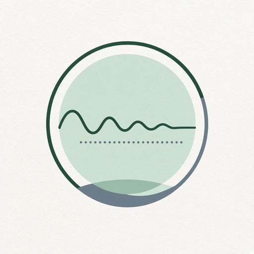

Phyllux apps hub
14. Chaos and equilibrium
8 modules in this Suite family. Soft launch lists the map; depth grows as Suite modules ship.
137. Chaos-to-Order DashboardUnstable situations becoming stable.
138. Equilibrium MonitorWhen a system appears temporarily stable.
139. Organizational Chaos MonitorOrganizational volatility tracking.

140. Personal Stability Evolution TrackerStability periods versus major change.141. Project Emergence MonitorUnexpected project developments.
142. Complexity RadarWhere complexity is increasing.
143. Change Detection EngineQualitative change, not only numeric deltas.
144. Emergence DetectorPatterns that were not explicitly programmed.